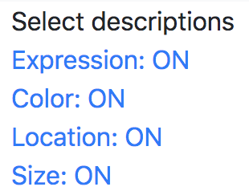

Our application can help people with visual impairments to freely explore and learn various paintings more in detail with object-level descriptions as well as spatial information such as position and size.

We have 2 modes to improve users' understanding of the painting, Object Mode(left) and Part Mode(right).
In Object Mode, you can hear information of each object.
In Part Mode, you can access to descriptions of several analysis points which are worth to be focused to understand the entire painting.
Also, using toggle buttons of a menu page, you can filter undesirable attributes out in Object Mode.

Contribution: Yunjung Lee, prof. Uran Oh
-------------------------------------------
Department of Computer Science and Engineering
Human Computer Interaction Lab.
Ewha Womans University, Seoul, South Korea